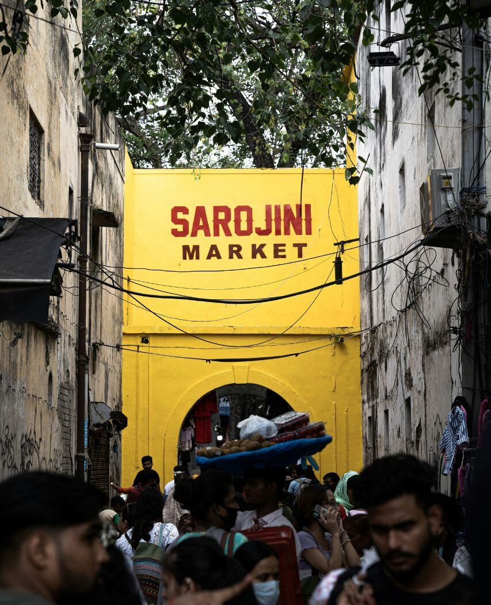
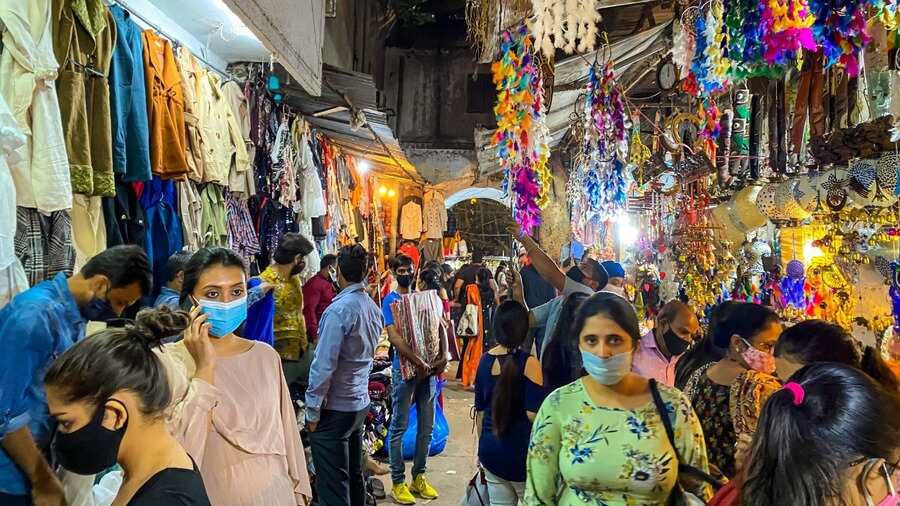
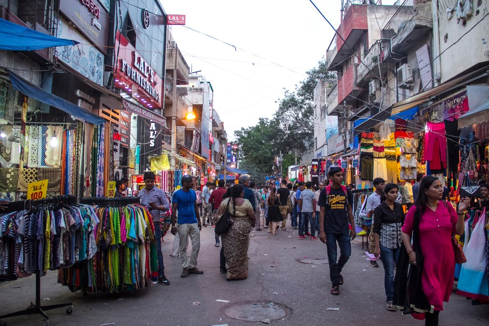

SAROJINI NAGAR MARKET



ABOUT SAROJINI NAGAR MARKET
Sarojini Nagar Market, located in South Delhi, is one of the most famous shopping destinations in India. Known for its vibrant street shops, it offers a wide variety of affordable clothing, accessories, and home decor. It’s a paradise for bargain hunters and fashion enthusiasts looking for trendy yet budget-friendly options.
The History Behind Sarojini Nagar
Sarojini Nagar Market was named after Sarojini Naidu, a prominent freedom fighter and poet. Over the years, it has evolved into a bustling marketplace attracting locals and tourists alike. The market is especially known for exporting surplus stock, making it an ideal spot to find branded items at throwaway prices.
Top Activities and Attractions
-
Bargain Shopping: Explore stalls and shops offering fashionable clothes, shoes, and accessories at unbeatable prices.
-
Street Food Delights: Relish delicious street food, including momos, chaat, and parathas, while shopping.
-
Home Decor Finds: Discover unique and affordable home decor items like lamps, cushions, and rugs.
-
Trendy Jewelry: Stock up on fashionable earrings, necklaces, and bracelets from local vendors.
Where to Stay Near Sarojini Nagar
If you want to stay near Sarojini Nagar, here are some options:
-
Hyatt Regency Delhi: A luxury hotel offering premium amenities, located just a short drive away.
-
FabHotel Prime: A budget-friendly hotel near Sarojini Nagar with comfortable accommodations.
-
The Leela Palace: A luxurious stay option for travelers seeking an upscale experience.
For more information, please fill out the form below:
Contact us at: har.sharma.it09@gmail.com